Here, we capture a few brief examples with text and screen shots.
Contents of page/chapter:
+I have detected an object at a non-Spitzer band, and I want to
know if Spitzer saw anything there.
+I study {this subject, as opposed to this target}, and I want to
know if there were any Spitzer programs specifically studying {this
subject}.
+I want to search the SHA for a whole list of objects all at
once.
+Quick Example: Just get my program's data out of a recent campaign.
+Quick Example: Just getting calibration data.
+Quick Example: Getting many zip files to automatically download
+Quick Example: Finding other data that are similar to yours.
+Quick Example: Finding Contributed Enhanced Product deliveries in
any given region.
+Quick Example: Finding data from two different instruments or modes at once.
+Quick Example: Finding data from two different channels at once.
+Quick Example: Finding just MIPS prime or non-prime data.
+Quick Example: Filtering by PI.
+Quick Example: Finding AORs that were constrained together.
+Quick Example: Finding IRAC subarray Level 2 data.
+Quick Example: Finding other IRAC Level 2 data that appears to be missing.
+Quick Example: Downloading Raw Data.
+Quick Example: Apparent logical inconsistencies in position
searches.
When you get a search result, in the search results pane, click on one of the rows you wish to investigate. Go over to the Details Pane, and click on the "AOR Footprint" tab. This is the outline of the observations. Did the field of view or the slit actually hit the specific region you wanted?
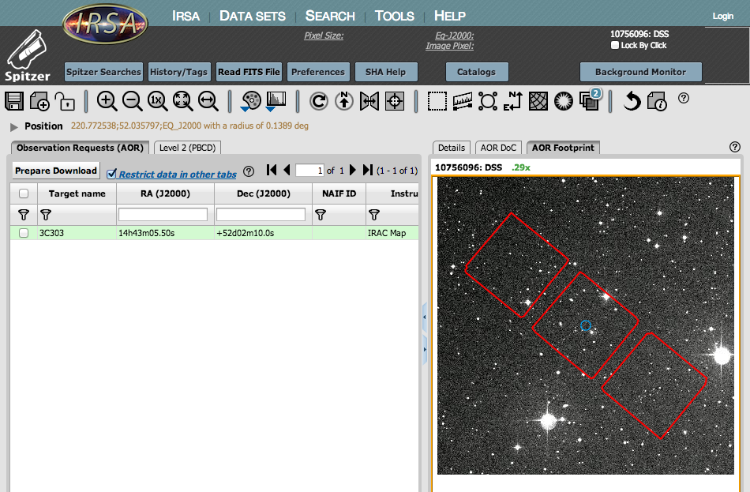
If you need to further investigate any observation, go to the Level 2 (PBCD) tab and find an image. The Level 2 tab shows you the highest-level products available for this observation, such as mosaics or extracted spectra. Look at the "file type" to discern whether they are images or tables (spectra). Click on a row corresponding to one of these products.
In the Details pane, click on the "Data" tab. These are the real data that are shown. Is the object you care about within the mosaic? Can you see it? Your search position is superimposed, so you can quickly tell if there is something there. Move your mouse over the position in the image in which you are interested. Look in the upper right for a readout of the values under your cursor.

Look at the toolbox under the blue tabs for things to do with the image. Let your mouse hesitate over any of the icons for a "tool tip" indicating what it does. You can change the stretch, or rotate North-up to make it easier to investigate the image.
You can use these tools to assess if the field of view or the slit actually hit the specific region you wanted, or if your object is actually in the image. If not, pick another observation and try this again until you find an observation you think would be useful to pursue further.
If you have more than one observation returned, you can use the Data Coverage tab to identify the observations that you think would be most useful to further pursue.
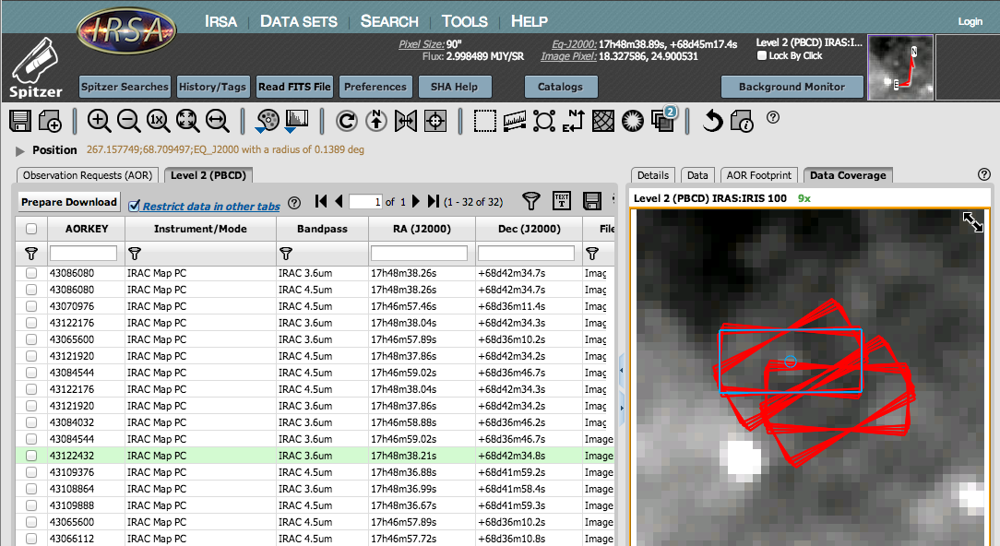
If the data you have found are spectra, you can examine the 2-D image prior to spectral extraction to see if there is something there; you can also make line plots of extracted spectra.
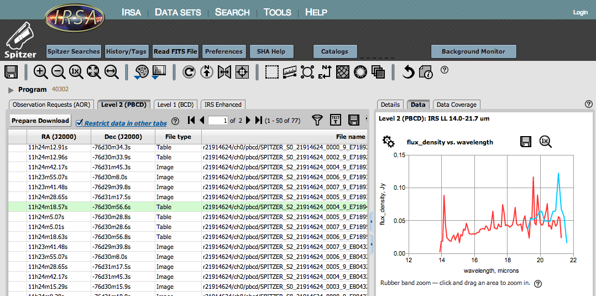
Convinced that you should pursue this? Go back to the AOR tab in the Results pane, and ensure that the checkbox on the far left of the line is checked. Click on "Prepare Download" (near the top of the Results pane) and ask for the Level 2 data, plus ancillary if you are feeling complete.
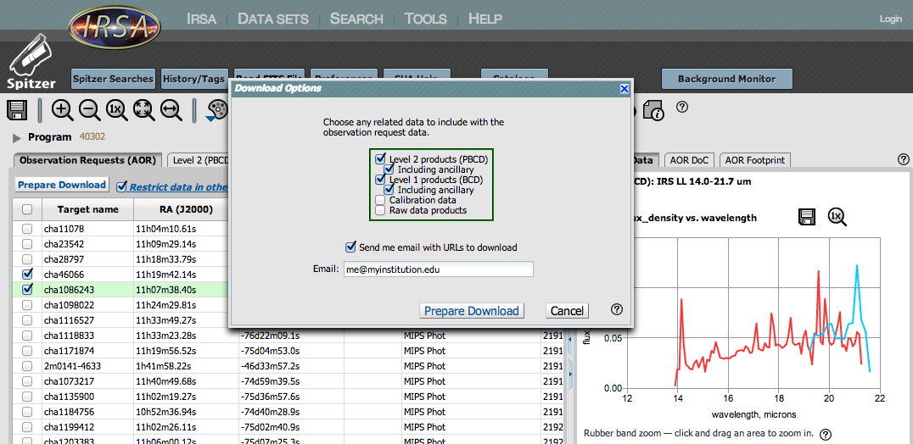
While the data are packaging up, you may wish to see if anyone has delivered reduced data on your region back to IRSA. Click on "Spitzer Searches" (blue tab in the top left) and repeat your position search, this time ensuring that the various 'Enhanced Products' tick boxes are selected.
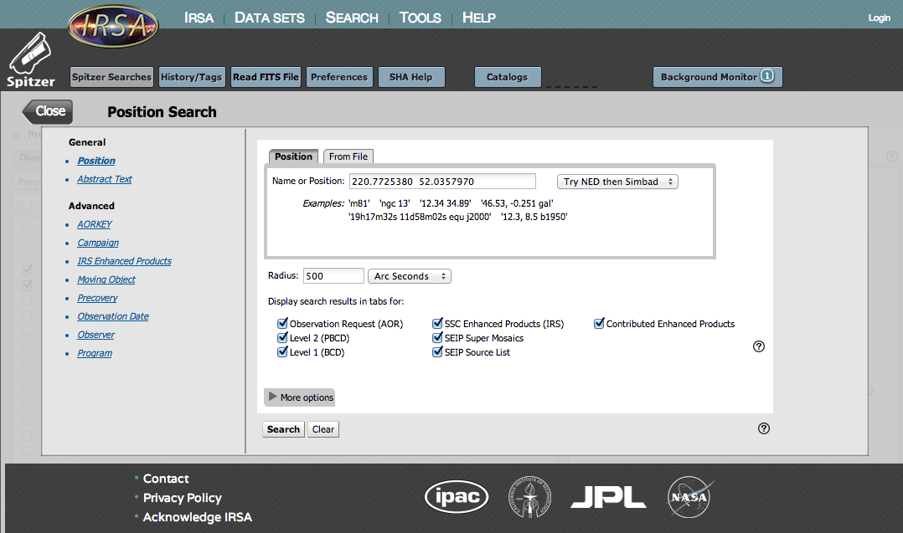
Enter your coordinates. This will search enhanced products from the SSC, (IRS, IRAC, and/or MIPS) as well as those delivered to the SSC and IRSA from the community. (These are currently largely -- but not entirely -- deliveries from the Spitzer Legacy Teams.) These enhanced products were generated from targets spread all over the sky, but none were all-sky surveys. You may get lucky and find some products, maybe some from bands other than Spitzer bands. USE LARGE SEARCH RADII WITH CAUTION. Some of these catalogs are very large!
Additional tabs will be returned with your search results, though some may have "no data to display."
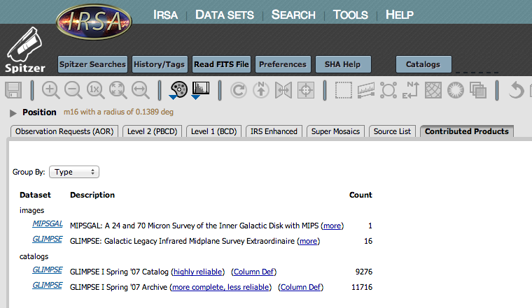
If you do find Contributed Products, click on the first link provided (the name of the dataset) to bring up another tab with the search results. You can investigate the coverage to see if you want to download the data, or overlay the source list to see if you want that catalog. You can download the data here in the same fashion as for the rest of the SHA -- click in the checkbox on the left, and 'Prepare Download' to package up the data. If you do download data or catalogs, please do obtain and read the delivery documentation (obtainable from the page you reach by clicking the 'more' link after the entry on the summary tab). There may be caveats about the images, or data quality flags in the catalogs.
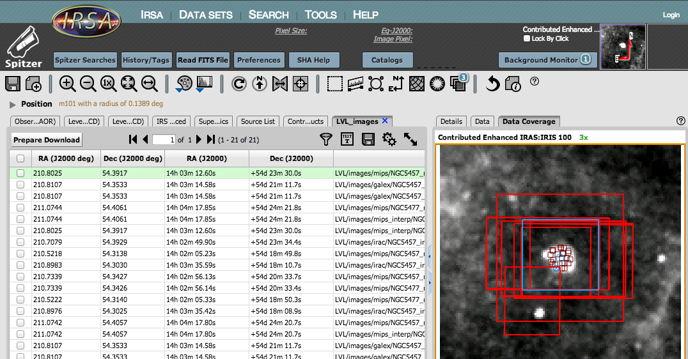
You may also find other enhanced products. Click on that tab, and you can investigate the image, catalog, or spectrum in much the same fashion as elsewhere in the SHA.
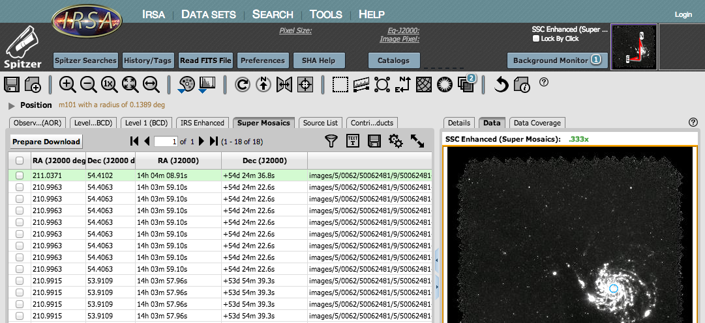
Please do obtain and read the documentation that goes with these
products too (IRS Enhanced Product information can be found in the IRS Instrument Handbook  ; information about the
Super Mosaics and Source List can be found as part of that delivery
; information about the
Super Mosaics and Source List can be found as part of that delivery  .
.
By now, your original Spitzer data packaging should be done and ready for download. Click on the "Background Monitor" link in the upper right to bring up a pop-up with the packages.
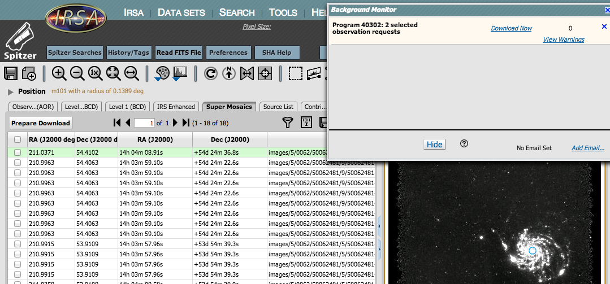
Click on "Download Now" to download the files; if there are many files, try out the scripts to download them all automatically. Consult the IRAC, IRS, or MIPS Instrument Handbook for additional information about the files, descriptions of artifacts, data reduction examples, etc., and you're on your way!
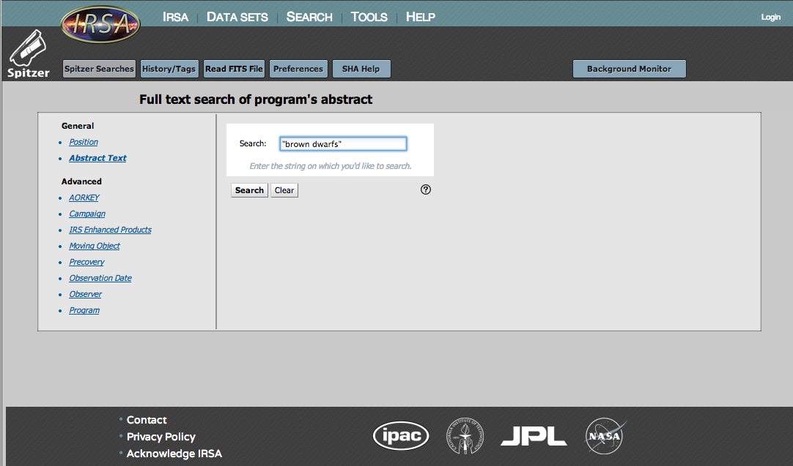
Click on any project to pull up all of the observations associated with that program into the Search Results window pane, and proceed from there as with any other search.
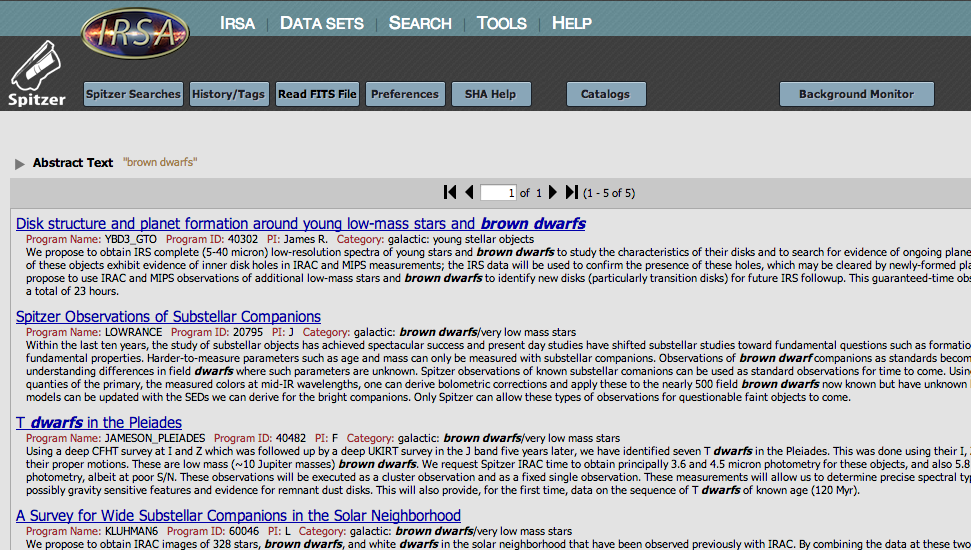
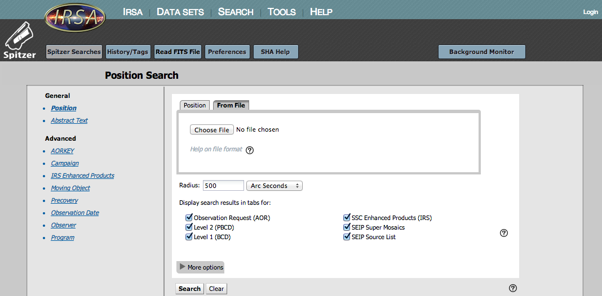
The file format can be a fully compliant IPAC table file  , or a
relatively simple plain text file described below. For an
IPAC table file, you may find the IPAC table validator
, or a
relatively simple plain text file described below. For an
IPAC table file, you may find the IPAC table validator  helpful.
helpful.
If doing a regular non-IPAC table file search, the file format is:
COORD_SYSTEM: Equatorial # Equatorial, Galactic, or Ecliptic - default is Equatorial EQUINOX: J2000 # B1950, J2000, or blank for Galactic - default is J2000 NAME-RESOLVER: NED # NED or Simbad - default is Simbad #Name RA/LON DEC/LAT PM-RA PM-DEC EPOCH "NGC 001" 12h34m23.45s 34d23m56.2s 2.3 3.4 1950.3 NGC2222 23.56d 34.456d 2.3 3.4 1950.3 NGC3333 23.56h 34.456d 2.3 3.4 1950.3 NGC4444 "12 34 12.23" "34 23 45.45" m31 legacy "17 18 00" "59 30 00" m32 m33 simbad NGC6946 NGC5194 ngc2992The SHA parses on spaces, so a space is the delimiter between fields. Therefore, if there is a space in your object name (e.g., "NGC 1001" versus "NGC1001") or position ("34 23 45.45" versus 34d23m45.45s"), you need to put quotes around the target name or its position.
Note in the example above that in some cases, I have specified the epoch of the observations (e.g., "NGC3333"), or I have allowed NED to resolve the name ("m31"), or I have asked for Simbad to resolve the name ("m33"). Note that the name resolver is not case-sensitive ("NGC5194" vs. "ngc2992").
When you are ready to search, go back to the SHA, find the file on your disk and upload it to the SHA. The search results should be returned like any other search, though it may not be tagged for later repeating of the search.
If the same AOR is returned for more than one of your targets, it appears in the list more than once.
Having problems making this work? Double-check your formatting -- that's the most common error. If name resolution fails for some of the targets, the rest of the search may fail -- provide coordinates for the troublesome names, or remove them.
How? Search by campaign for the most recent campaign. Many AORs will be returned, but only the first n rows will appear (where n defaults to 50). Once the results appear, apply a filter to the results. Click on "Filters" in the upper right of the "Campaign Search Results" pane and note that filter icons and/or text boxes appear on the top of each column. Find the "Program ID" column. If you get a text box, type "=" and then your desired program ID. If you get a filter icon, click on the filter icon, select the program ID(s) you want, and apply the filter. Just the AORs from that campaign and that program will appear. Select all of them by clicking the checkbox on the top of the column of checkboxes. Click 'Prepare Download' and select which data you want packaged. Once packaged, download the data from the background monitor.
NOTE THAT the filters as imposed this way only apply to your current tab, even if "restrict data in other tabs" is selected!
How? Search by campaign for the one you want. Many AORs will be returned, but only the first n rows will appear (where n defaults to 50). Calibration observations are likely to be among the first in the campaign. Look at one of these rows by selecting the row (clicking anywhere on it) and noting the details that appear in the Details pane. Calibration programs will have a program ID, title, and PIs just like a regular science observing program, but the titles will look like "Calibration Program" and the PI will look like "IRAC Calibration". Each campaign should have its own calibration program ID, though some may have more than one. You can explore these and note the program ID (PID) and the PI of a calibration observation in your campaign. Apply a filter to the search results to leave only programs like that calibration program. Click on "Filters" in the upper right of the "Campaign Search Results" pane and note that text boxes and/or filter icons appear on the top of each column. Locate the "PI" column and either enter the PI of the calibration program, being careful to match the text exactly, OR if it has given you a pop-up with a finite number of options, select your desired PI from the list, and click on 'Apply.' Just the AORs from that campaign and that program will appear. Select all of them by clicking the checkbox on the top of the column of checkboxes. Click 'Prepare Download' and select which data you want packaged. Once packaged, download the data from the background monitor.
NOTE THAT the filters as imposed this way only apply to your current tab, even if "restrict data in other tabs" is selected!
How? If you don't want to click to download each piece, use the download script provided by the Background Monitor (when you have more than 1 zipfile to download), available either from the Background Monitor itself or from email sent to you when the packaging is complete. There are several download scripts provided.
Simplest incarnation:
First, ensure that you have "wget" installed by typing "which wget" at a terminal prompt. If you do not have it, download and install it from gnu.org. Save the wget script from the SHA to a plain text file, and invoke the wget lines from this plain text file either by copying and pasting those lines individually into your terminal window, or by typing "csh [yourtextfile]" at the prompt. The files will be automatically and sequentially downloaded to your disk. The files stay on disk here for at least 72 hours, so you have a window of time to download them.
More sophisticated options:
Automatic unzipping: Another wget (and curl; see below) script that is provided will enable your machine to automatically unzip the packages that are downloaded. Download that script and invoke it, as above.
Curl: Curl (also spelled cURL) is another interface, like wget, but is optimized for Macs. Curl probably came installed on your system (unlike wget), but to check, type "which curl" at a terminal prompt. If you do not have it, Google it, download it, and install it. Save the curl script from the SHA to a plain text file and invoke the script from this plain text file either by copying and pasting those lines individually into your terminal window, or by typing "csh [yourtextfile]" at the prompt. A curl script that automatically unzips the files is also provided by the SHA.
Your own script: a plain text file listing the URLs for the zipfile downloads is also provided, should you want to write your own program for downloading these zipfiles.
Windows machines:
Google, download, and install wget for Windows. Google, download, and
install unzip.exe for the command-line for Windows. See below for
some suggestions. Download the plain text file listing the URLs for
the zipfile downloads, being sure to save it as plain text. Then, to
download using wget and the file of URLs downloaded from SHA:
wget.exe --content-disposition -i
<file_of_urls_downloaded_from_sha>
To extract the zip files into a new directory:
unzip.exe -d <new_dir_name> *.zip
Instructions on where to get wget and unzip:
wget for windows:
How: There is no easy way to find observations in a particular very specific mode without a priori knowing which targets were observed with those modes. You'd have to search the whole sky for observations matching a particular set of criteria. The best way to do this is to contact us through the Help Desk, and we will get into the database itself and help you find similar observations.
At any rate, it may very well be that you can use these contributed enhanced products, catalogs or images, for your research. It's worth checking out!
How: Go to the "Position Search" page. Ensure that the "Contributed Enhanced Products" box is checked.
USE LARGE SEARCH RADII WITH CAUTION. Some of those catalogs are very large, and may even time out if you are retrieving, say, half a million rows.
Contributed enhanced product search results come up with a tab that is a "Summary View" of the search results. By default, the results are grouped by type -- images, catalogs, or spectra. You can also choose to sort the results by originating project.
The images come up quickly, and the summary page indicates how many images from each project are returned. Note that sometimes this could mean one image for each band, or it could mean image, errors, and coverage for each band, or it could mean multiple resamplings of the same bands, etc. To investigate exactly what images are available, click on the first link in each line. Additional tabs are spawned for each click, containing a summary of the contents of each image. Please consult the original documentation that came with the delivery for definitions, explanations, and caveats that might go with each image. Note that some teams delivered, e.g., GALEX and Halpha images, so you may obtain non-Spitzer data.
Catalogs come up more slowly (because they are harder to search!), and depending on your search, the SHA may tell you that it has completed searching on "8 of 10 catalogs" or a similar phrase. Here too, the catalog contents vary across projects, and even between deliveries within the same project. In the case of the catalogs, the "count" tells you how many individual catalog entries there are in that catalog for your search parameters. Click on the first link in each line to spawn an additional tab with the catalog values. Note that by default, only 50 lines are shown, but as these catalogs can be very long, it may take a second or two to read in and render. The catalog columns as displayed are exactly as provided by the original Legacy team (with some additional columns added by IRSA to reformat the RA/Dec into standard options), so the columns are effectively different for each catalog. Please consult the original documentation that came with the delivery for column definitions, caveats, quality flags, etc.
For information on individual programs, and information on individual deliveries, please see the SSC website.
How? If you have already searched and are looking at the grid of results, you can impose filters. But, the filters imposed after a search are logically ANDed together; that is, if you add a filter to only show IRS Staring observations and then add another filter to only show IRS Mapping Observations, you will be left with no data, because the filters are looking for data that are both IRS Stare AND IRS Map, and no data meet (can ever meet) that requirement.
The fastest way to actually weed down the results in the fashion desired in this example is to repeat your search slightly differently. Click on "More Options" to pull down the additional options. Click on all the observing modes you wish to include, and un-select the observing modes you do not wish to include. Search again, and the search results will then only include, e.g., data from both IRS Staring and IRS Mapping observations.
But -- see the next example!
How? If you have already searched and are looking at the grid of results, you can impose filters. Although the filters imposed after a search are most commonly logically ANDed together, you can get around this. You can use the "IN" operator which means 'included within this list', e.g., the parameter on which I am querying (such as "Bandpass") is included within the list I am specifying (such as, from the list of bandpasses provided, where more than one can be selected by holding down the command key and clicking on the bands desired). For this example, do exactly that -- go to the Level 1 or Level 2 tab, click on "Filters", and note that text boxes and/or filter icons appear at the top of each column. Locate the "Bandpass" column, and click on the filter icon. Check the box that says "select multiple", and select both 5.8 and 8 microns from the list. "Apply" the filter. The rows that should be left in the window are just the ones that correspond to the 5.8 and 8 micron observations.
NOTE THAT the filters as imposed this way only apply to your current tab, even if "restrict data in other tabs" is selected!
How? Search on your desired position/observation/program/etc. Under "More options" on the search page, ask it to only return MIPS observations, and ensure that you are asking it to return Level 1 data as well as anything else you want returned. When the search results appear, click on the Level 1 tab to bring it to the foreground. Scroll over, and find the column labeled "Primary field." This value is 1 if that array was prime, and 0 if it was not. Go up to the upper right of the search results window, and click on "Filters." Locate "Primary field," then click on the filter icon and select the value you want to select (1= yes, it was prime, 0= no, it was not prime but instead ancillary). Apply the filter and close the window. The remaining observations as displayed are the observations that meet the criterion you have imposed.
NOTE THAT the filters as imposed this way only apply to your current tab, even if "restrict data in other tabs" is selected!
How: Search on your desired position/observation/program/etc. Click on "Filters" in the upper right of the results pane. Locate the PI column. If you have a text box, type in "=" operator, and then the name exactly as it appears in the list. If it gives you a filter icon, click on the filter icon, select the PI name(s) from the list it gives you, and apply. The remaining observations as displayed are the observations that meet the criterion/criteria you have imposed.
NOTE THAT the filters as imposed this way only apply to your current tab, even if "restrict data in other tabs" is selected!
How: Go to the AORKEY search. Enter the AORKEY you want to search. Ensure that the "Get all AORs in the same scheduling constraints" checkbox is checked, and submit the search. All AORs that are linked to that AOR will be returned.
The SSC website summarizes all of the flavors of constraints that were available.
NOTE THAT some time series observations were obtained in the following manner. For a series of observations (a, b, c, d, e), a was tied to b with a particular constraint, b tied to c, c tied to d, and d tied to e. If you search on the AORKEY corresponding to observation b, and ask the SHA to give you all of the AORs constrained to that observation, it does exactly (and only) what you asked it to do -- b is tied to a and c, but not explicitly tied to d or e. So it returns to you observations a, b, and c, and not d or e.
How: Since no subarray mosaics are created, there will never be any to display. You must download the Level 1 BCD frames, and make your own mosaic from the BCD data using MOPEX or another software package of your choice.
Potential gotcha: If you search for a list of observations of, e.g., certain exoplanet targets, you will return many observations in the AOR tab, some of which will be subarray and some of which will be full array. When you go directly to the Level 2 tab for this search, there will be entries from the full array observations, but not the subarray observations. If you have searched only for subarray observations, it is obvious that something unusual is going on when you go to the Level 2 tab and get 'no data to display.' But, when you have a mixture of kinds of observations in the AOR tab, then there are still rows to display in Level 2, and it is not obvious that something unusual has happened.
Why the heck does the pipeline not make mosaics for subarray data? The post-BCD pipeline was not designed to work with the three-dimensional data cubes that are the subarray BCDs. When the software was developed it was deemed unlikely that subarray observations would be used for anything other than photometry of single bright objects and mosaics would not be a desired product. Please see the IRAC Instrument Handbook for more information on dealing with subarray data.
How: Since no mosaics are or will be produced, there will never be any Level 2 products for download. You must download the Level 1 data and make your own mosaic from the BCD data using MOPEX or another software package of your choice.
The IERs where there are missing Level 2 products are ones where there are more than 8000 frames within a single observation. These are most commonly exoplanet monitoring observations, in which case a single mosaic is not particularly the desired product in any case.
How: When requesting packaging of the data, you can request that the raw data also be packaged for download. Most users will never need to access the raw data. You cannot search on the raw data directly.
NOTE THAT not every frame (DCE, or data collection event) was used in the creation of the BCD and PBCD products. All of the original DCEs are still in the SHA, and can still be obtained, even if you cannot search on the raw data directly.
When packaging by AOR and asking for the raw data, all products matching the designated AORKEY are packaged, regardless of whether "apply spatial constraints to individual data products" is selected and the DCEs fall out of that cone.
When packaging by BCD or PBCD and asking for the raw data, all products matching the designated AORKEY and channel are packaged, regardless of whether "apply spatial constraints to individual data products" is selected and the DCEs fall out of that cone. This may change in the future such that if you package by BCD or PBCD, only the data that when into those products will be packaged.
How: This is a weird one, but it is actually doing exactly what it is supposed to be doing, for several reasons. By default, the SHA applies the spatial constraints to the individual data products -- this radio button option is the first one that appears under "More options" so you have to consciously find this button if you want to change it. The default search radius of ~8 arcmin is smaller than two fields of view for IRAC. The Level 2/PBCD mosaics are produced on an AOR basis, and include the area observed by both fields of view even if it is filled with NaNs. It is quite possible, therefore, to have AORs covering a default search region, and Level 2 mosaics apparently covering a default search region, but because of the "apply spatial constraints to individual data products" option, the Level 1/BCD images are not returned.
Here is the real-life case that prompted this example. Search by position with the defaults in place for NGC 2264, asking it to return the AOR, Level 1, and Level 2 tabs. These observations are single pointings (not mosaics), for the purposes of monitoring young stars in this cluster. Thus, the 3.6 micron channel always points at the same portion of sky and the 4.5 micron channel points at a slightly different portion of sky, and the observation does not dither back to make sure that there is 3.6 micron coverage of the original 4.5 micron field of view.
Pick any of the post-cryo (PC) data AORs, such as 29340160 or 29347328 or 29347072. Click "restrict data in other tabs". Click on Level 2. See two mosaics there. Click on the 3.6 um one, with "restrict data in other tabs" still checked. Click on Level 1, and there are BCDs there. Go back to Level 2. Unclick the 3.6 um one and click the 4.5 um one. Go back to Level 1. "There are no data to display."
This is because the 4.5 BCDs are just outside of the search radius. These data were obtained as part of the observation, and the resultant pipeline mosaic includes the search position, but that search position does not actually include any 4.5 micron data.
Of course, searching by AORKEY does NOT reproduce this, because searching by AORKEY returns the whole AOR. Searching using a larger radius will recover the 4.5 micron data. Most non-monitoring observations tiled the larger area such that most of the sky covered by 3.6 microns is also covered by 4.5 microns, and thus BCDs would be returned for both channels, appropriately limited by position. BUT in this particular case, because this was a single field, monitored in one IRAC channel, you can get this seemingly inconsistent result, where there is a 4.5 micron mosaic but "no BCDs."